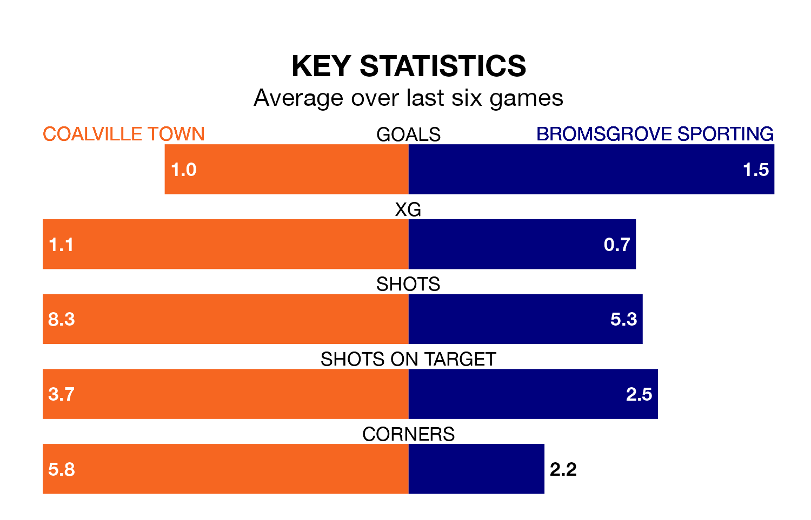

Bromsgrove Sporting travel to Coalville Town on Saturday in the Southern League Premier Central.
The visitors come into the game on the back of a win in their last match, having beaten Needham Market 3-0 at home.
Coalville, meanwhile, lost their last match, 2-1 against Halesowen Town.
With 63 goals in 33 games so far this season, Coalville are scoring more than average in the league with 1.9 goals per game. And they are conceding at an average rate, letting in 51 goals at a rate of 1.5 per game.
Bromsgrove Sporting, meanwhile, are below average scorers, with 1.2 goals per game, compared to a league average of 1.5. They have conceded 1.3 goals per game.
In the last 10 years, Coalville and Bromsgrove Sporting have played each other on eight occasions. Coalville won five of them and they drew three times.
On average, Coalville scored 2.5 goals and Bromsgrove Sporting 0.6 in those matches.
Their last meeting was on August 15, when Coalville won 4-1 away.
The visitors are 15th in the table after 35 games, of which they have won 11 and drawn eight, earning 41 points.
Town are two places ahead of Bromsgrove Sporting in 13th, with 12 wins and nine draws putting them on 45 points.
The home side are in mixed form in the Southern League Premier Central, with one win and four draws from their last six games.
With three wins and a draw over that period, Bromsgrove Sporting's form is better – they have taken 10 points from 18, compared to Coalville's seven.
Updated: 12:16 (UTC), 25/03/24